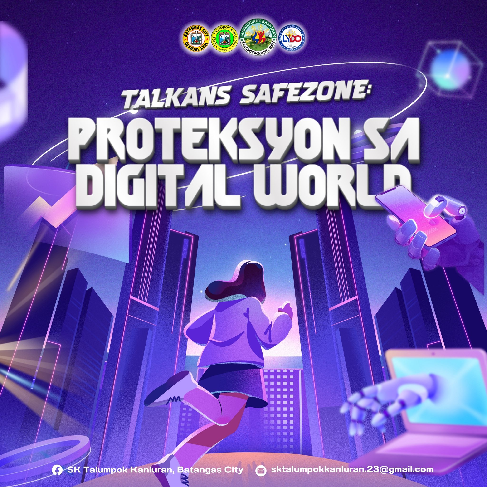
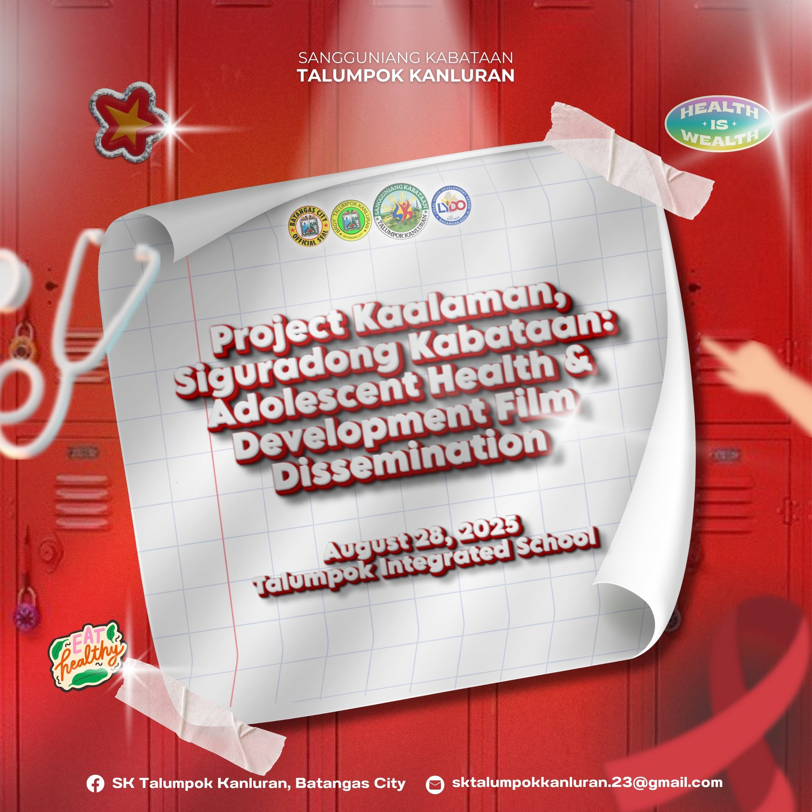
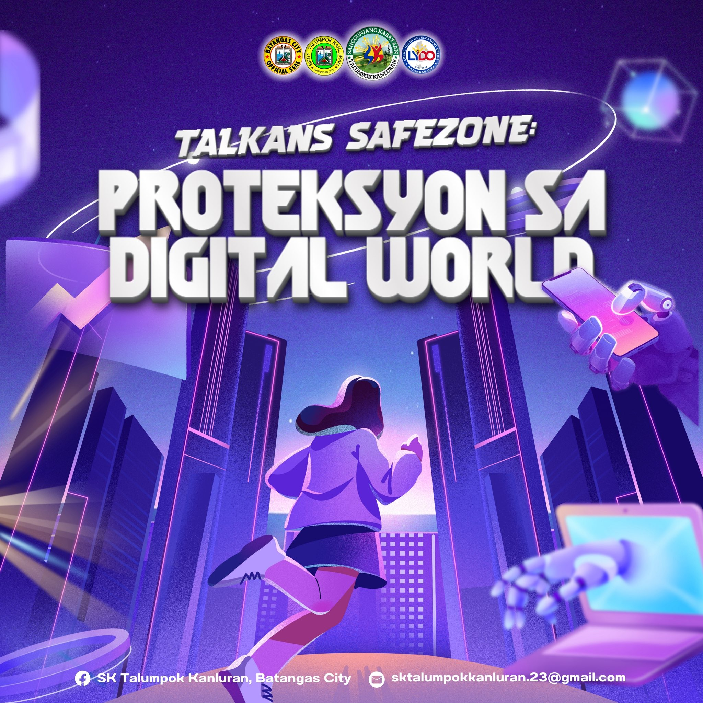
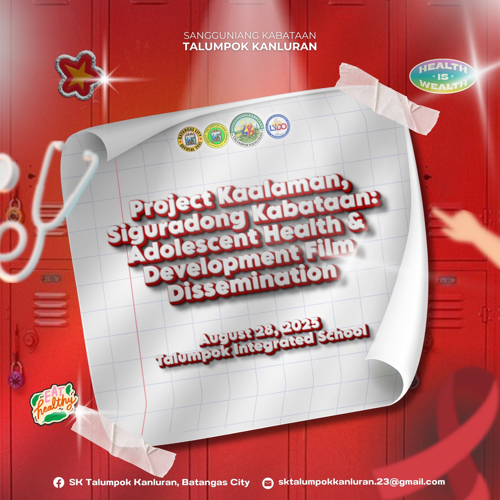

Our Programs
From youth development,health, education, and community services.

Ng Barangay Talumpok Kanluran
Towards progress, unity, and development.
Learn MoreFrom youth development,health, education, and community services.


 



The Linggo ng Kabataan , as mandated by Republic Act No. 10742 or the SK Reform Act of 2015, is an annual celebration that underscores the vital role of the youth in governance, leadership, and community development. In support of this mandate, SK Talumpok Kanluran celebrates Linggo ng Kabataan with various projects and initiatives tailored to the needs and aspirations of the young people in the barangay. These activities serve as platforms to promote leadership development, volunteerism, social inclusion, and responsible citizenship among the youth.